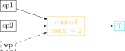

Construction
std::unique_ptr<T>: exclusive ownership. Copy is deleted, move transfers ownership:p1 = std::move(p);leavespempty.reset(new T)replaces the object,reset()frees it. Zero overhead over a raw pointer.std::shared_ptr<T>: shared ownership. A control block keeps the count of owners (use_count()); copying increments it, destroying decrements it, the object is deleted when it reaches zero.std::weak_ptr<T>: points to an object managed byshared_ptrwithout incrementing the count.wp.lock()returns ashared_ptr(empty if the object is gone).
Prefer std::make_unique<T>(args) and std::make_shared<T>(args) to new.
Example: optional composition
class A {
int i = 0;
std::unique_ptr<B> upb; // 0..1 owned B
public:
A(int i_, std::string s) : i(i_), upb(std::make_unique<B>(s)) {}
A(const A& a) : i(a.i), upb(a.upb ? std::make_unique<B>(*a.upb) : nullptr) {}
A& operator=(const A& a) {
i = a.i;
upb = a.upb ? std::make_unique<B>(*a.upb) : nullptr;
return *this;
}
A(A&&) = default; // moves the unique_ptr
A& operator=(A&&) = default;
~A() = default; // unique_ptr deletes B
};Picture

Two owners and one observer: the weak pointer does not count.
Intuition
Ownership becomes part of the type: reading unique_ptr<B> in a class tells you it is a composition, shared_ptr<B> that the part is shared.
Pitfall
Two shared_ptr pointing at each other never reach count zero: a cycle leaks. Break it by making one direction a weak_ptr.